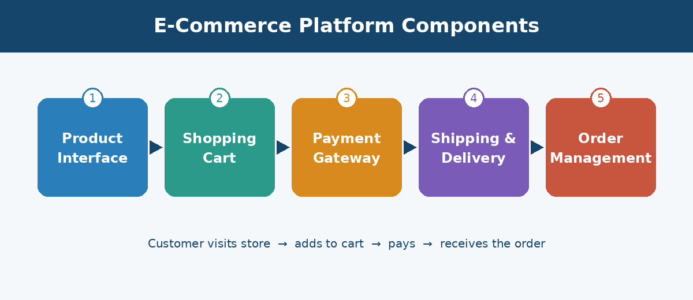

Institute: Delta Institute
Student Name: Habiba Zakaria
Student ID: 2502064
Course: Internet Applications and Electronic Platforms
Academic Year: 2026

Electronic commerce, also known as E-Commerce, has become an important part of modern life. It allows people to buy and sell products and services through the Internet without visiting traditional physical stores.
With the development of technology and the increasing use of smartphones and computers, online shopping has become easier and more popular. Customers can browse products, compare prices, place orders, and make payments from anywhere.
E-commerce platforms help businesses reach more customers, improve their services, and manage their sales efficiently. This report explains the meaning of e-commerce platforms, their main components, how they work, and their advantages and challenges.
E-commerce platforms are digital systems or websites that allow businesses and individuals to sell products and services online.
These platforms provide the tools needed to create online stores, display products, receive customer orders, process payments, and manage deliveries.
Examples of popular e-commerce platforms include Shopify, WooCommerce, and Amazon. These platforms make online shopping and selling easier by bringing different business operations together in one digital environment.
An e-commerce platform consists of several important components that work together to provide a complete shopping experience.
The product interface is the part of the online store where customers can view available products. It usually includes:
A clear and organized product interface helps customers find what they need easily.
The shopping cart allows customers to select products and add them to their orders before completing the purchase. Its main functions include:
For example, when a customer selects a shirt and a pair of shoes, both products can be added to the shopping cart.
Payment gateways are services that help process electronic payments securely between customers and online stores. Common payment methods include:
Payment gateways help make online transactions easier and more secure.
Shipping and delivery are important parts of e-commerce because they help products reach customers after an order is placed. This component includes:
Good delivery services help improve customer satisfaction.
Order management helps store owners organize and monitor customer orders. It allows businesses to:
This component helps businesses operate more efficiently.
| Component | Main Purpose | Key Functions |
|---|---|---|
| Product Interface | Display products to customers | Images, descriptions, prices, categories, search |
| Shopping Cart | Collect selected products before purchase | Add/remove products, change quantities, calculate total |
| Payment Gateways | Process electronic payments securely | Cards, digital wallets, other electronic methods |
| Shipping and Delivery | Get products to customers | Delivery methods, shipping costs, order tracking |
| Order Management | Organize and monitor orders | Receive orders, update status, manage inventory |
The process of online shopping usually follows several simple steps:
These steps show how different components of an e-commerce platform work together to complete an online purchase.
| Platform | Description |
|---|---|
| Amazon | One of the most popular online shopping platforms. It allows customers to search for products, compare prices, place orders, and receive deliveries. |
| Shopify | An e-commerce platform that helps individuals and businesses create and manage their own online stores. |
| WooCommerce | An e-commerce tool that works with WordPress. It helps website owners turn their websites into online stores and manage products and orders. |
E-commerce platforms provide many benefits for both businesses and customers.
| For Customers | For Businesses |
|---|---|
|
|
Although e-commerce has many advantages, it also faces some challenges, such as:
Businesses need to address these challenges to provide a better shopping experience.
E-commerce platforms have changed the way people buy and sell products and services. They provide an easy and convenient way for businesses to reach customers and manage their online operations.
The main components of these platforms include the product interface, shopping cart, payment gateways, shipping and delivery, and order management.
In conclusion, e-commerce platforms play an important role in modern business and are expected to continue developing as technology advances and online shopping becomes more common.